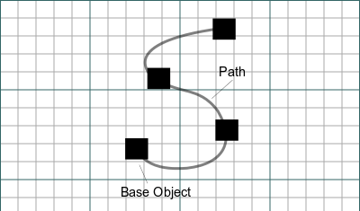

Draft PathArray
|
| Menü konumu
|
| Draft → PathArray
|
| Workbenches
|
| Draft, Arch
|
| Varsayılan kısayol
|
| Hiçbiri
|
| Ayrıca bkz
|
| Draft Array
|
|
Description
The PathArray tool places copies of a selected shape along a selected path. The path can be a Wire or one or more Edges. The shapes can optionally be aligned with the tangent of the path. If required, a translation Vector can be specified to shift the shapes so the centroid is on the path. If no objects are selected, you will be invited to select them.

How to use
- Select a shape object you wish to distribute.
- Select a path object along which the shapes will be distributed. -or-
- Select some edges of a path object.
- Press the Draft PathArray button.
Options
- The array starts with shape copies which are not aligned to the path, nor translated to a new position by default. You can then change the count, alignment and/or translation vector in the properties.
Properties
- DATABase: The shape object
- DATAPathObj: The path object
- DATAPathSubs: The subelements(edges) of path object to be used as the path
- DATACount: The number of time to copy the shape
- DATAXlate: The translation vector
- DATAAlign: True to align the shapes to the path, False to leave shapes in their default orientation.
Scripting
The PathArray tool can by used in macros and from the python console by using the following function:
makePathArray(shapeobject,pathobject,count,[translationvector],[alignment],[listofpathsubelements])
- Distribute count copies of a document shapeobject along a pathobject or subobjects of a pathobject. Optionally translates each copy by FreeCAD.Vector xlate direction and distance to adjust for difference in shape centre vs shape reference point. Optionally aligns baseobject to tangent/normal/binormal of path.
Example:
import FreeCAD,Draft
Draft.makePathArray(base,path,items,centretrans,orient,pathsubs)
Usage Notes
- Align + Xlate: When Align is True, the Xlate vector is relative to the local (tangent/normal/binormal) coordinates. When Align is False, the Xlate vector is relative to the global (XYZ) coordinates.
Limitations
- This tool is not available before version 0.14
- The PathSubs Property does not yet appear in the properties list.
Technical Explanation
When "Align = false", PathArray's logic is quite easy to understand.
When "Align = true" the logic is a bit harder to grasp:
- Construct Frenet coordinate systems on the path (X is tangent, Z is normal, Y is binormal).
- Copy the original object to every on-path coordinate system, so that the global origin is matched with the on-path coordinate system origin.
It is much easier to understand with pictures. The following images show how the array is produced, depending on which plane is the path.
Path on XY Plane
Path on XZ Plane
Path on YZ Plane
The clear advantage of this logic is that as you reorient the path but not the object, the result is consistent - object remains aligned to the path the way it was before reorienting the path.
(Thanks to @DeepSOIC for this explanation)
{kind=link}
{kind=link}
{kind=link}
{kind=link}
{kind=link}
{kind=link}
{kind=link}